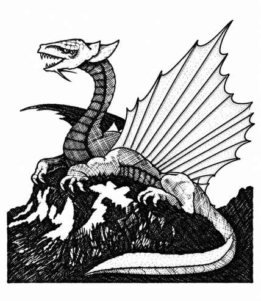

黄铜龙 · Brass Dragon（Draco Impudentus Gallus）
 |
|
黄铜龙通常栖息于沙质沙漠，洞穴巢穴也多位于此类地区。它们爱主动攀谈，略显自私，因此倾向中立。攻击方式为爪、爪、咬，或使用两种吐息之一：睡眠气体呈锥形，自龙口延伸 7 寸，末端直径 2 寸；恐惧气体云长 4 寸、宽 5 寸、厚 2 寸（自地面向上）。气云中的生物必须通过对抗龙息的豁免检定，否则陷入睡眠或因恐惧逃跑。小型黄铜龙的豁免获得 +2，大型黄铜龙则承受 −2 修正。会说话并施法的黄铜龙，每逢奇数年龄阶段获得一个一环法术，偶数阶段获得一个二环法术；随机决定法术。
上一节：蓝龙 · Blue Dragon（Draco Electricus）
下一节：青铜龙 · Bronze Dragon（Draco Gerus Bronzo）